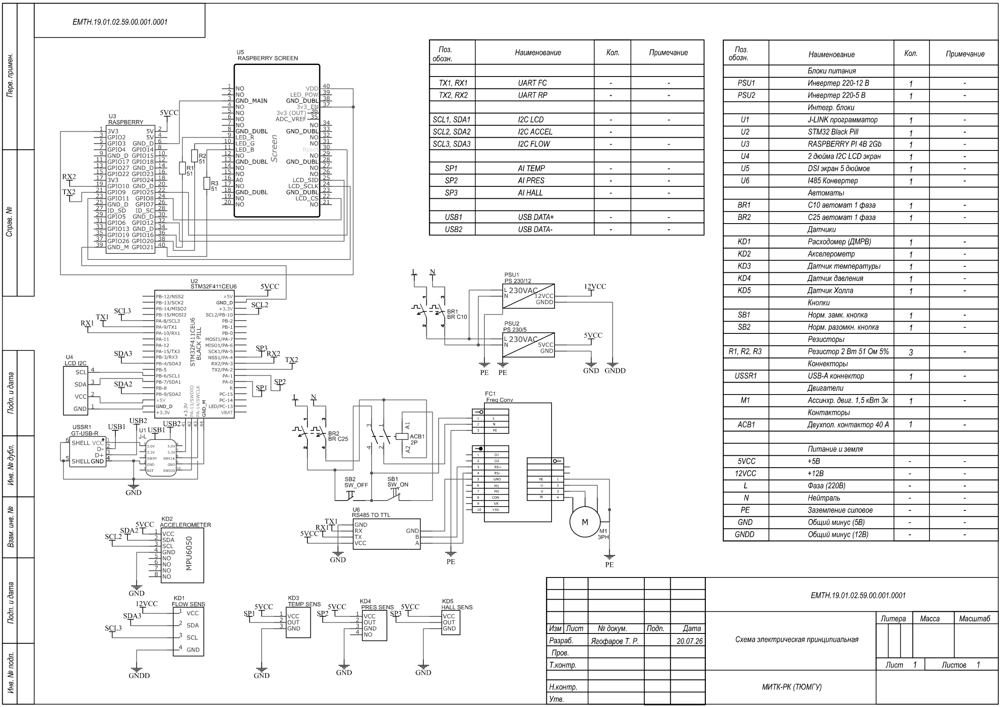
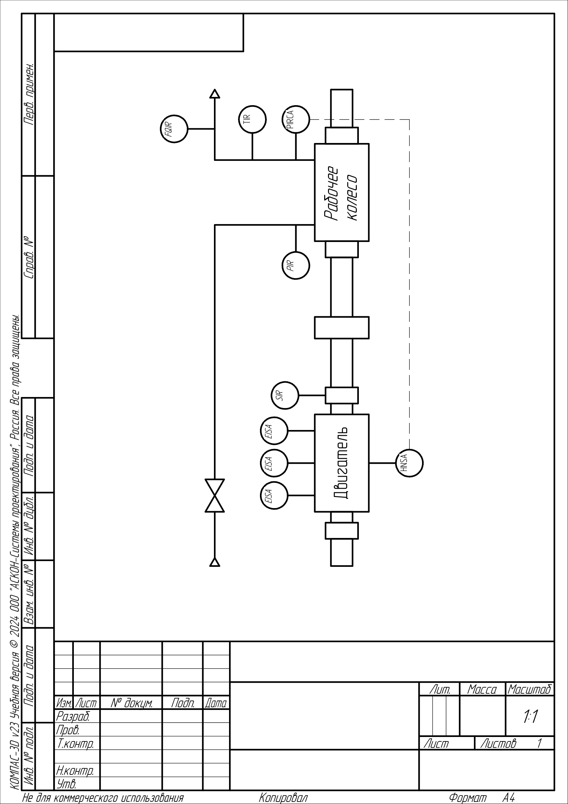

РК‑200, диффузор, корпус
Сменное рабочее колесо, неподвижная проточная часть, защитный корпус и регулирующий клапан.
Завершённая архитектура стенда для демонстрации компрессорного эффекта, регистрации параметров и сравнительной проверки колёс РК‑200‑Э, РК‑200‑Д.
Измерения выполняются до и после рабочего колеса по единой схеме для двух аэродинамических вариантов.
Комплектность соответствует функциональной схеме и ведомости покупных изделий.
Сменное рабочее колесо, неподвижная проточная часть, защитный корпус и регулирующий клапан.
Асинхронный двигатель 1,5 кВт, шпоночное соединение 6 мм и единый посадочный интерфейс втулки.
Преобразователь частоты 1×220 В → 3×220 В, номинал 2,2 кВт, выходной ток 9 А.
Расход, давление на входе и выходе, температура, вибрация и частота вращения.
Сбор сигналов, архивирование результатов, экран оператора и обмен с ПЧ.
Жёсткая модульная рама, усиленные уголки, виброопоры и закрытая опасная зона.
Пуск разрешается только при исправной цепи останова и закрытом защитном корпусе.
Электрическая и функциональная схемы, реестр комплектующих и расчётные суммы.

